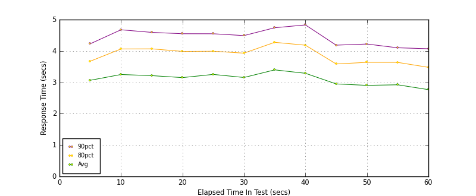
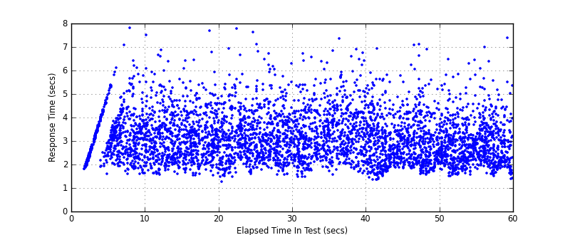
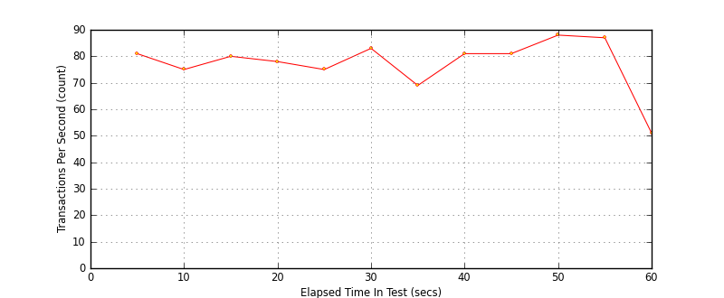

Performance Results Report
Summary
transactions: 4913
errors: 0
run time: 60 secs
rampup: 0 secs
test start: 2017-05-24 19:19:19
test finish: 2017-05-24 19:20:17
time-series interval: 5 secs
workload configuration:
| group name | threads | script name |
|---|
| user_group-21 | 10 | redis_stress.py |
| user_group-20 | 10 | redis_stress.py |
| user_group-23 | 10 | redis_stress.py |
| user_group-22 | 10 | redis_stress.py |
| user_group-25 | 10 | redis_stress.py |
| user_group-24 | 10 | redis_stress.py |
| user_group-2 | 10 | redis_stress.py |
| user_group-3 | 10 | redis_stress.py |
| user_group-1 | 10 | redis_stress.py |
| user_group-6 | 10 | redis_stress.py |
| user_group-7 | 10 | redis_stress.py |
| user_group-4 | 10 | redis_stress.py |
| user_group-5 | 10 | redis_stress.py |
| user_group-8 | 10 | redis_stress.py |
| user_group-9 | 10 | redis_stress.py |
| user_group-10 | 10 | redis_stress.py |
| user_group-11 | 10 | redis_stress.py |
| user_group-12 | 10 | redis_stress.py |
| user_group-13 | 10 | redis_stress.py |
| user_group-14 | 10 | redis_stress.py |
| user_group-15 | 10 | redis_stress.py |
| user_group-16 | 10 | redis_stress.py |
| user_group-17 | 10 | redis_stress.py |
| user_group-18 | 10 | redis_stress.py |
| user_group-19 | 10 | redis_stress.py |
All Transactions
Transaction Response Summary (secs)
| count | min | avg | 80pct | 90pct | 95pct | max | stdev |
|---|
| 4913 | 1.260 | 3.112 | 3.910 | 4.450 | 5.016 | 7.817 | 1.006 |
Interval Details (secs)
| interval | count | rate | min | avg | 80pct | 90pct | 95pct | max | stdev |
|---|
| 1 | 407 | 81.40 | 1.603 | 3.065 | 3.673 | 4.229 | 4.697 | 6.106 | 0.829 |
| 2 | 377 | 75.40 | 1.584 | 3.249 | 4.064 | 4.675 | 5.398 | 7.817 | 1.079 |
| 3 | 404 | 80.80 | 1.544 | 3.213 | 4.068 | 4.592 | 5.128 | 6.873 | 1.019 |
| 4 | 391 | 78.20 | 1.260 | 3.150 | 3.986 | 4.549 | 4.954 | 7.685 | 1.005 |
| 5 | 376 | 75.20 | 1.478 | 3.252 | 3.991 | 4.549 | 5.268 | 7.780 | 1.043 |
| 6 | 416 | 83.20 | 1.457 | 3.154 | 3.930 | 4.490 | 5.200 | 6.708 | 1.006 |
| 7 | 348 | 69.60 | 1.566 | 3.397 | 4.276 | 4.740 | 5.282 | 7.362 | 1.026 |
| 8 | 409 | 81.80 | 1.334 | 3.288 | 4.184 | 4.830 | 5.319 | 6.923 | 1.109 |
| 9 | 405 | 81.00 | 1.489 | 2.949 | 3.585 | 4.185 | 4.634 | 7.076 | 0.917 |
| 10 | 440 | 88.00 | 1.502 | 2.903 | 3.637 | 4.221 | 4.886 | 7.105 | 0.975 |
| 11 | 435 | 87.00 | 1.546 | 2.921 | 3.636 | 4.101 | 4.716 | 6.993 | 0.933 |
| 12 | 255 | 51.00 | 1.386 | 2.767 | 3.478 | 4.072 | 4.448 | 7.379 | 0.935 |
Graphs
Response Time: 5 sec time-series

Response Time: raw data (all points)

Throughput: 5 sec time-series
